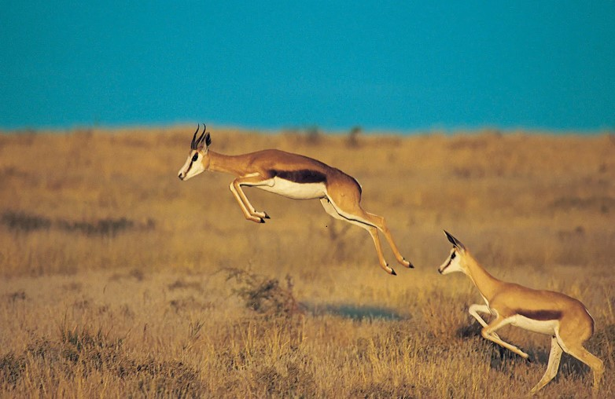

South Africa is also known as'Rainbow Nation'
Kaapse Klopse, officially known as Cape Town Minstrel Carnival, is seen as a celebration of survival and renewal and also existence and perseverence.
The national animal of S.Africa is Springbuck
